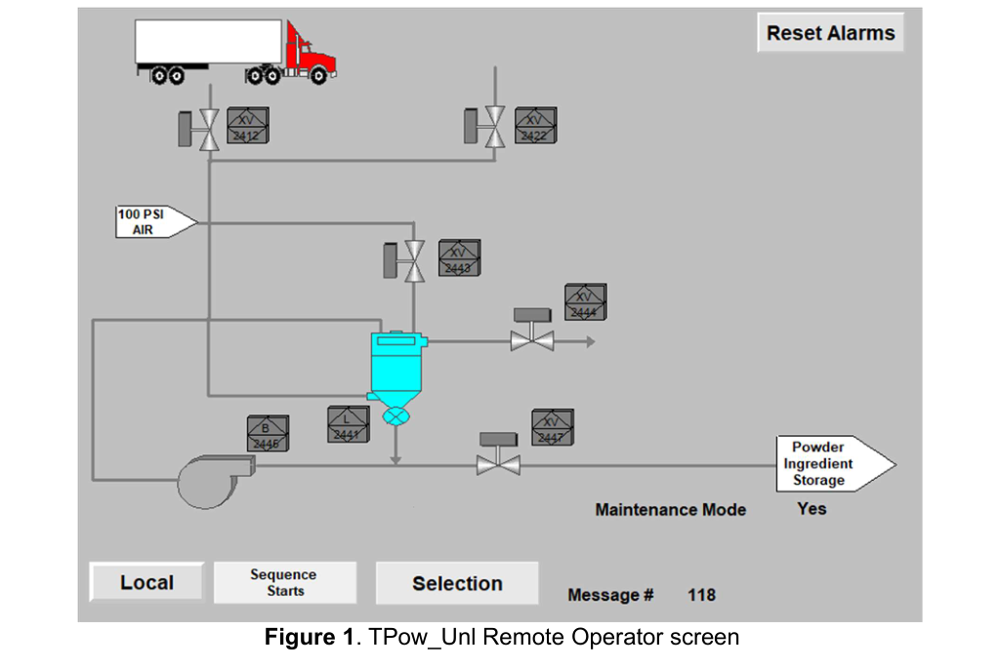
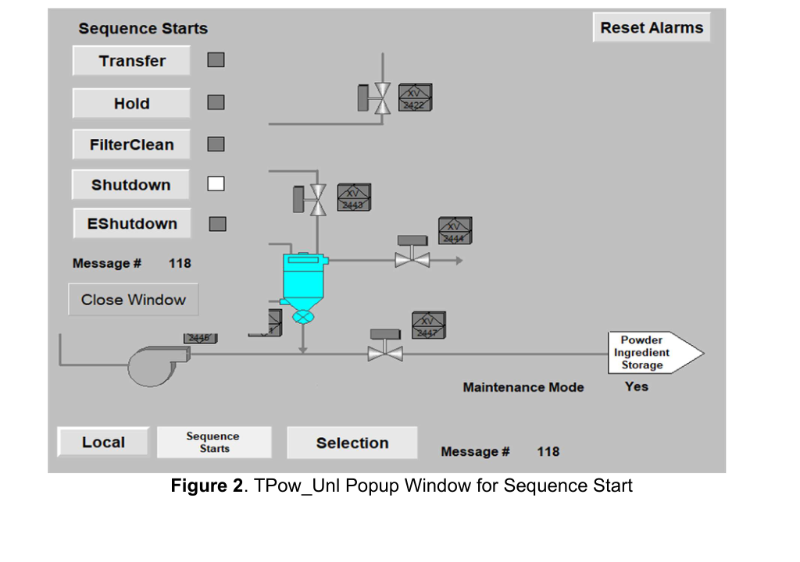
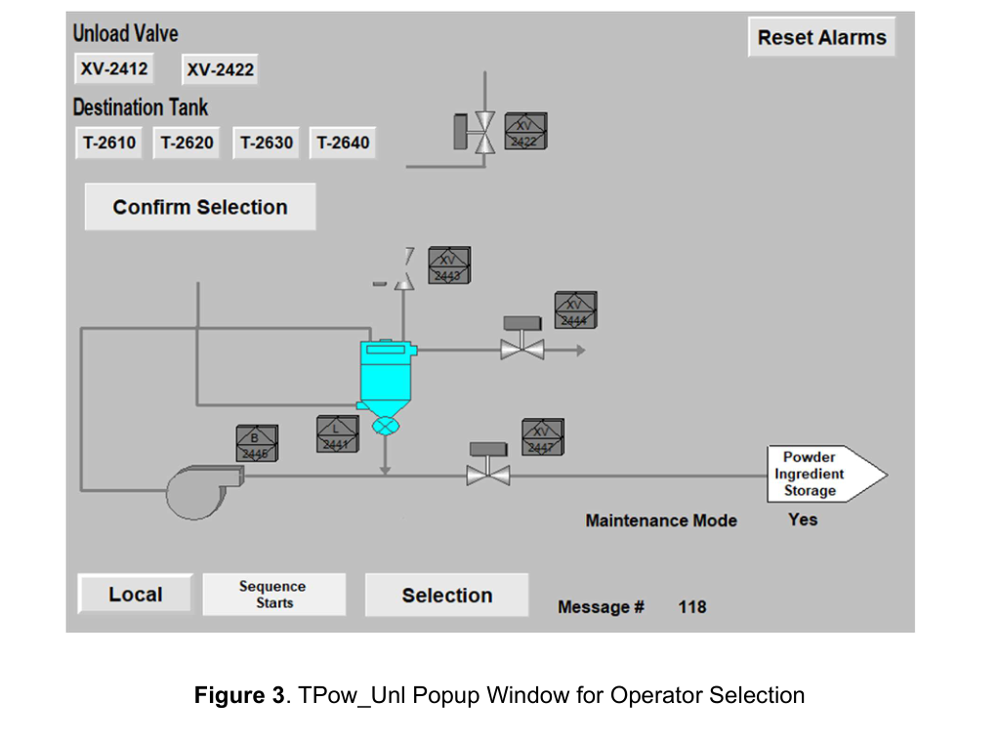
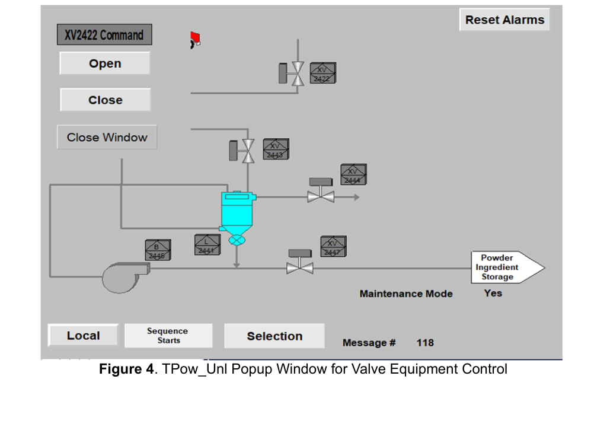
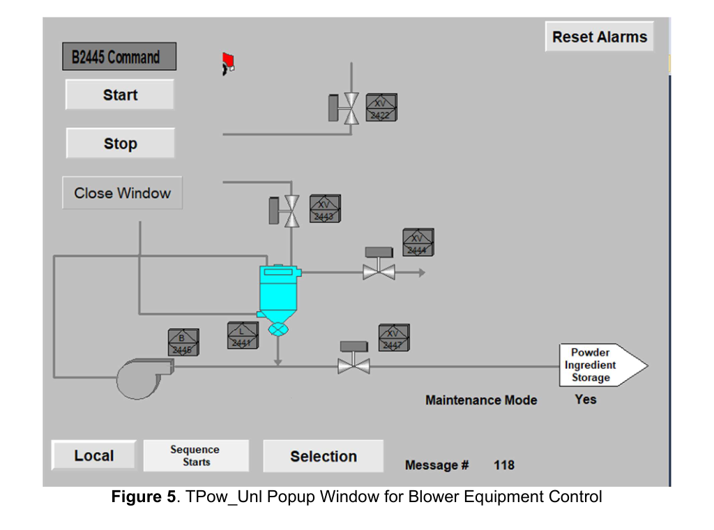

A CompactLogix 5069-L306ER distributed-I/O PLC project that automates pneumatic unloading of a powder-ingredient truck into plant storage tanks, with full Transfer / Hold / FilterClean / Shutdown / E-Shutdown sequencing and a FactoryTalk View HMI.
This project is a semester-long graduate team build in the EE 5340 Advanced PLC lab. The scope was to design, program, simulate, and commission a complete unit-level control system for the Truck Powder Ingredient Unload station (TPow_Unl) — the plant skid that pneumatically conveys dry powder ingredients out of a tanker trailer, through a vacuum receiver and airlock, and into one of four ingredient storage tanks downstream. The unit is realized on a Rockwell Automation CompactLogix 5069-L306ER processor (cell CmpLogix-11) that hangs off the main plant ABClogix4 controller via a 1756-EN2TR Ethernet/IP bridge in slot 7, and is operated from a dedicated FactoryTalk View ME HMI.
The deliverable exercises the full entry-level controls workflow — sequence-diagram authorship, AOI-based device programming, PackML-style state management, HMI screen design, and inter-processor messaging — on a real pneumatic-conveying process that shares destination tanks with a parallel Rail Powder Unload unit, so destination-tank coordination and abnormal-condition handling are first-class concerns rather than afterthoughts.
The project was structured to build competence across the full lifecycle of a unit-level controls job. It was intended to develop working knowledge of CompactLogix 5069 distributed-I/O configuration (Slot 1 input, Slot 2 output, onboard dual Ethernet with linear/DLR topology), application of vendor AOI device libraries (motors, valves, slide gates, flop gates) to stand up a complete device layer quickly, authoring of ISA-TR88 PackML-inspired sequence diagrams as the source of truth for ladder implementation, construction of a FactoryTalk View ME HMI with main overview, command pop-ups, operator selection screens, and alarm reset, use of MSG blocks for inter-processor communication between the CompactLogix unit controller and the plant ControlLogix, and design of an abnormal-conditions framework that distinguishes Alarm, Hold, and Shutdown responses based on the physics of the process.
The unit is organized around a single CompactLogix 5069-L306ER controller that owns all of its own I/O, drives all local field devices, and communicates upstream to the plant ControlLogix through a 1756-EN2TR bridge hosted in slot 7 of the ABClogix4 chassis. The destination-tank coordination — which one of four ingredient storage tanks the unload is routed to, and the interlock that prevents a simultaneous Rail Powder Unload to the same tank — is handled with MSG reads/writes across that bridge, so the unit controller can make its own sequencing decisions without giving up the plant-wide interlock.
Logically the application follows an ISA-TR88 PackML-inspired layering. A unit-level sequence supervisor selects and runs one of five sequences at a time — Transfer, Hold, FilterClean, Shutdown, or E-Shutdown — each authored as an explicit step diagram in the project spreadsheet and implemented as a step-latched ladder routine. Underneath the sequences is a device layer built entirely from vendor AOIs (motor, valve, slide-gate, flop-gate) that exposes a consistent .Cmd / .Status / .Fail interface for every field device so the sequences never touch raw I/O bits. A separate abnormal-conditions monitor runs in parallel with whatever sequence is active and elevates low-vacuum, high-discharge-pressure, device-fail, and valve-feedback faults into the appropriate Alarm/Hold/Shutdown response.
The implementation uses a Rockwell Automation CompactLogix 5069-L306ER controller (revision 37) as the unit processor. Local I/O is provided by two 5069 modules bolted directly to the controller: a 5069-IB16F 16-point high-speed 24 V DC sinking input in slot 1 (Series A, Rev 2.001) and a 5069-OB16F 16-point sourcing output in slot 2 (Series B, Rev 3.001). The controller's two onboard Ethernet ports (A1/A2) are configured in Linear / DLR mode so the unit can be chained into a device-level ring with neighboring cells without requiring a dedicated ring switch. A 1756-EN2TR two-port Ethernet/IP bridge in slot 7 of the plant ABClogix4 chassis provides the handoff up to the plant ControlLogix, and that bridge is the channel for the MSG-based destination-tank handshakes between the Truck Powder and Rail Powder unload unit controllers.
The process equipment under control is a vacuum pneumatic-conveying skid built around two major pieces: a T-2440 cyclone-type receiver with integrated cartridge filter, and a B-2445 positive-displacement blower that pulls vacuum on the receiver and pushes powder downstream. A L-2441 rotary airlock at the base of the receiver isolates vacuum from the destination-tank fill line. Nine motorized valves complete the flow path: two truck-station unload valves (XV-2412 and XV-2422) select which trailer position is being drawn from, XV-2447 is the truck-station outlet block that must be open whenever the blower is running, XV-2443 is the receiver purge-inlet valve used during filter-cleaning pulses, XV-2444 is the receiver vent valve, and four destination-tank fill valves (XV-2611, XV-2621, XV-2631, XV-2641) route to ingredient storage tanks T-2610, T-2620, T-2630, and T-2640 respectively. Instrumentation includes mass-flow meter FI-2448 (0–300 lb/min) with totalizer FQI-2448, vacuum transmitters PI-2442 (0–15 psi, receiver vacuum) and PI-2445 (0–15 psi, blower suction), and pressure transmitters PI-2443 (0–100 psi, purge-air header) and PI-2446 (0–100 psi, blower discharge).
The firmware is written in Ladder Diagram under Rockwell Studio 5000 Logix Designer against the CompactLogix project TPow_Unl.acd. All field devices are wrapped in vendor Add-On Instructions — motor AOIs for the blower and airlock, valve AOIs for the nine XV valves, and slide-gate / flop-gate AOIs reserved for future expansion — so each sequence routine works only in terms of .Cmd_Open, .Cmd_Close, .Sts_Running, .Sts_Fail style interfaces rather than raw output bits. Sequences themselves are carried in user-defined data types that bundle the step register, the step timer, the operator commands (Start/Hold/Reset/Stop), the transition flags, and the per-step outputs so that each sequence can be instanced cleanly and dropped into the HMI without bespoke tag plumbing. An AFI (Always False Instruction) is used as a diagnostic rung anchor in unfinished branches during development so the ladder can be downloaded and simulated without side effects. Operator interaction runs on FactoryTalk View ME through five screens: a main Remote Operator screen that renders the full flow path (truck, XV valves, receiver T-2441/T-2446, blower B-2445, 100 psi purge-air header, and the four destination tanks) with animated running/open status and a Reset Alarms button; a Sequence Starts pop-up with Transfer / Hold / FilterClean / Shutdown / EShutdown buttons; an Operator Selection pop-up for picking the source unload valve (XV-2412 or XV-2422) and the destination tank (T-2610 / T-2620 / T-2630 / T-2640); and device-command pop-ups for individual valves (e.g., XV-2422 Open/Close) and for the blower (B-2445 Start/Stop).
The first phase took the control-narrative text and turned it into explicit step diagrams for every mode the unit needs to run. Five sequences were authored in a single Excel workbook, one sheet per sequence, each captured as an ordered list of steps with entry conditions, output actions, transition conditions, and exit destinations. Transfer is a nineteen-step flow that clears any lingering operator response, requests the source-valve and destination-tank selection from the operator, verifies the chosen destination tank is below 80% full and that the Rail Powder Unload is not currently running to the same tank, closes all nine valves to a known baseline, zeroes the FQI-2448 totalizer, opens the selected source valve (XV-2412 or XV-2422) and the truck-outlet block XV-2447, opens the selected destination-tank valve, then brings up the airlock L-2441 and the blower B-2445 in that order, and finally runs until either mass flow drops below 5 lb/min or the destination tank reaches 95%, at which point it auto-chains into Shutdown. Hold is a fourteen-row sequence that captures the operator's mid-run manipulation options (lifting a single valve, pausing the blower, resuming) with clean exits back to Transfer, forward to Shutdown, or to E-Shutdown. FilterClean is a twenty-two-step sequence that opens the receiver vent XV-2444 and then pulses the purge-inlet XV-2443 open for 0.5 s, closed, pause 1 s, three cycles in succession, before auto-chaining into Shutdown. Shutdown is a seventeen-step ordered stop that brings the blower down first, then the airlock, then closes the nine valves in a defined sequence so the receiver does not slam shut on vacuum. E-Shutdown is a five-step emergency stop that trips the blower and airlock in parallel, closes all nine valves in parallel, and holds a fifteen-second lockout timer before the unit will accept another start.
The second phase imported the vendor AOI libraries for the motor, valve, slide-gate, and flop-gate device classes and wired every field device into its appropriate AOI instance. Each AOI exposes the standard .Cmd, .Sts, .Fail, and feedback-timeout contracts so the higher-level sequences only ever read status flags and write command bits rather than toggling raw output terminals. An AFI rung was dropped in front of any half-implemented device call during development so the ladder could be downloaded, scanned, and simulated without firing physical outputs. Simulation was exercised by forcing input bits for the Sts_Open / Sts_Closed limit switches on each valve and the Sts_Running contact on the blower and airlock, stepping the sequences through in controller tags and confirming that each step's outputs matched the spreadsheet.
The third phase built the FactoryTalk View ME application. A main Remote Operator screen was drawn in the style of a classic P&ID overview — truck silhouette at left, XV-2412 and XV-2422 unload valves feeding into the T-2441/T-2446 receiver and its integrated bag filter, XV-2443 and XV-2444 on the top of the receiver, the B-2445 blower, the 100 psi purge-air header at upper right, and the four destination storage tanks at far right — with color-animated valve bodies, running-state animation on the blower and airlock, and live numeric fields for FI-2448, FQI-2448, PI-2442, PI-2443, PI-2445, and PI-2446. A global Reset Alarms button and navigation buttons for Local Control, Sequence Starts, and Operator Selection anchor the screen. Two operator-side pop-ups were added: Sequence Starts exposes explicit Transfer / Hold / FilterClean / Shutdown / EShutdown request buttons, and Operator Selection lets the operator pick one of the two source unload valves and one of the four destination tanks before confirming the selection. Device-level pop-ups (valve Open/Close, blower Start/Stop) were added behind each animated device so the unit can be manipulated device-by-device from Local Control when a sequence is not active.
The fourth phase laid in the abnormal-conditions framework and the plant handshakes. Eight conditions were captured in the spreadsheet and implemented as a parallel monitor routine: receiver vacuum PI-2442 < 3 psi with the blower running for 30 s triggers a Shutdown; blower-suction vacuum PI-2445 < 3 psi with the blower running for 20 s triggers a Shutdown; blower-discharge PI-2446 > 80 psi for 5 s triggers an Alarm; PI-2446 > 90 psi for 10 s triggers a Shutdown; any motor AOI reporting Sts_Fail triggers a Hold; any valve AOI reporting Sts_Fail triggers a Hold; standard Auxiliary / Hand-Off-Auto / Overload events on devices raise an Alarm; and valve feedback failures (Fail-To-Open / Fail-To-Close) raise an Alarm. The shared-destination-tank interlock was implemented with MSG blocks reading the Rail Powder Unload unit's active-destination register out of the plant ControlLogix through the 1756-EN2TR bridge, so the Transfer sequence's "destination clear" precondition directly reflects the plant-wide state rather than a local assumption.
The FactoryTalk View ME application was organized around a single flow-path overview with layered command pop-ups. The overview renders the complete skid — truck, the two truck-station unload valves, the 100 PSI purge-air header, the receiver and its integrated bag filter, the receiver vent and purge-inlet valves, the blower, the airlock, the truck-outlet valve, and the arrow out to the Powder Ingredient Storage tanks — with animated valve bodies and running-state feedback. Operator-side pop-ups sit on top of the overview for sequence commanding, source/destination selection, and direct device manipulation in Local Control.





The finished system exercises a complete unit-level controls project from empty project file to an HMI-driven, fault-tolerant pneumatic-conveying demo. Specific accomplishments include a correctly commissioned CompactLogix 5069-L306ER unit with a 5069-IB16F input module and a 5069-OB16F output module with matching Series/Revision metadata and onboard Ethernet configured in Linear/DLR topology; a clean AOI-based device layer wrapping the B-2445 blower, the L-2441 airlock, and the nine XV valves with standardized .Cmd / .Sts / .Fail interfaces; five spreadsheet-authored sequences (Transfer, Hold, FilterClean, Shutdown, E-Shutdown) implemented end-to-end in ladder with step registers, step timers, explicit transition conditions, and auto-chain rules between sequences; an abnormal-conditions monitor that correctly discriminates Alarm / Hold / Shutdown responses based on the physics of the vacuum and discharge-pressure circuits; a FactoryTalk View ME HMI with a main flow-path overview, Sequence Starts and Operator Selection pop-ups, and per-device command pop-ups for every valve and motor; and MSG-based inter-processor destination-tank coordination with the Rail Powder Unload unit to prevent the two skids from converging on the same ingredient storage tank.
The project exercised a cross-section of core skills for a practicing controls engineer. On the programming side it covers Ladder Diagram authorship, Add-On Instruction (AOI) consumption and instancing, User-Defined Type (UDT) design for sequence state, and use of the AFI diagnostic instruction during staged development. On the sequence-design side it covers ISA-TR88 / PackML-inspired step-based sequences, explicit entry-condition and transition-condition modeling, auto-chaining between sequences, and operator-intent propagation through Hold / Shutdown / E-Shutdown paths. On the HMI side it covers FactoryTalk View ME screen design, live process animation, pop-up command and selection windows, and alarm-reset plumbing. On the hardware side it covers CompactLogix 5069 I/O commissioning, Series/Revision management, onboard-Ethernet Linear/DLR topology, and pneumatic-conveying process instrumentation (vacuum, discharge pressure, mass flow, totalizer). On the networking side it covers Ethernet/IP and CIP configuration, MSG-block reads and writes across a 1756-EN2TR bridge, and inter-processor interlock design. And on the safety and reliability side it covers a structured abnormal-conditions framework that maps specific process-variable excursions and device-feedback failures into Alarm, Hold, and Shutdown responses.
Controller & networking: Rockwell Automation CompactLogix 5069-L306ER (Rev 37) with onboard dual Ethernet (Linear/DLR), 1756-EN2TR Ethernet/IP bridge (ABClogix4 slot 7) for plant handshake to the Rail Powder Unload unit controller.
Distributed I/O: 5069-IB16F 16-point 24 V DC high-speed sinking input (Series A, Rev 2.001), 5069-OB16F 16-point sourcing output (Series B, Rev 3.001).
Process equipment: T-2440 vacuum receiver with integrated cartridge filter, B-2445 positive-displacement blower, L-2441 rotary airlock, nine motorized block valves (XV-2412 / XV-2422 truck unload, XV-2443 receiver purge inlet, XV-2444 receiver vent, XV-2447 truck-station outlet, XV-2611 / XV-2621 / XV-2631 / XV-2641 destination-tank fill valves), instrumentation FI-2448 / FQI-2448 mass flow + totalizer, PI-2442 / PI-2445 vacuum, PI-2443 / PI-2446 discharge and purge-air pressure.
Software: Rockwell Studio 5000 Logix Designer (Ladder Diagram, AOI device libraries, UDT-based sequence objects, AFI diagnostic rungs, MSG inter-processor communications), Rockwell FactoryTalk View ME (overview, sequence-start pop-up, operator-selection pop-up, device-command pop-ups, alarm reset).
Standards & frameworks: ISA-TR88.00.02 PackML-inspired sequence modeling, EtherNet/IP and CIP (ODVA), Rockwell Integrated Architecture I/O and AOI conventions.
The final deliverable is a working Truck Powder Ingredient Unload unit that boots cleanly on its CompactLogix controller, presents a complete flow-path overview and device-command HMI to the operator, executes each of the five sequences end-to-end against simulated field I/O, correctly refuses to start a Transfer to a destination tank that the Rail Powder Unload unit is already filling, and elevates low-vacuum, high-discharge-pressure, and device-failure events into the correct Alarm / Hold / Shutdown responses. Beyond the working demo, the most valuable outcome was the end-to-end experience of carrying a control-narrative specification through sequence-diagram authorship, AOI-based ladder implementation, HMI screen design, and plant-level interlock negotiation — the same path an entry-level controls engineer walks on every greenfield skid they deliver.